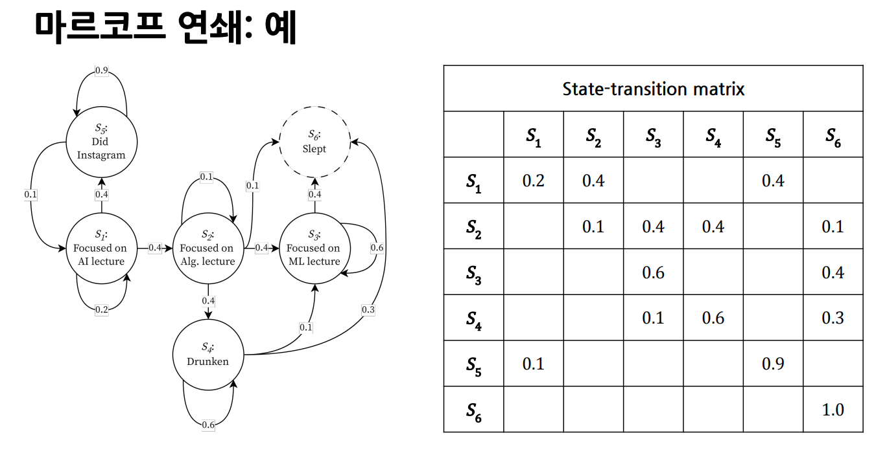

확률 프로세스(Stochastic Process)
확률 프로세스란 시간에 따라 발생한 확률변수들의 순차적 모임을 뜻합니다.
또한 다음 사건이 발생할 확률은 현재까지 발생했던 사건들이 발생할 결합확률을 조건으로하는 조건부 확률로 표현 됩니다. 이는 다음 사건이 발생할 확률을 알기 위해서는 이전에 발생한 사건들의 발생 확률을 모두 기억해야 함을 의미하기도 합니다. 수식으론 다음과 같이 나타낼 수 있습니다.
마르코프 성질(Markov Property)
확률 프로세스에서 다음 사건이 발생할 확률이 오직 현재 사건에만 의존적이라고 가정하는 성질을 의미합니다. 이전에 발생한 사건들의 발생 확률을 기억할 필요 없이 현재 사건에만 집중하면 되는 특징이 있습니다. 대다수의 강화 학습 문제는 마르코프 성질을 따르는 확률 프로세스로 표현됩니다.
마르코프 연쇄(Markov Chain)
ref: https://roytravel.tistory.com/358
상태와 상태 전이 확률(State-Transition Probability)로 이루어진 Tuple로 정의되며, 마르코프 성질을 따르는 확률 프로세스를 의미합니다.

마르코프 결정 프로세스(Markov Decision Process, MDP)
마르코프 연쇄에는 현재의 상태와 다음 상태로 이동하는 상태 전이 확률로 이루어진 튜플 이였습니다. Markov Decision Process, 줄여서 MDP는 마르코프 연쇄에 행동(Action)과 보상(Reward), 할인율이 추가된 튜플로 정의 됩니다.
Decision의 의미는 뭘까요? action 입니다. MDP는 특별히 어려운게 아니라 액션을들 진행하는 과정을 의미합니다.
수식보단 문자가 많이 나올 예정입니다. MDP 에서 가장 중요한 점은 state, action 이 모든것들이 random variable이라는 것입니다.
밑의 숫자는 t로 시간의 경과를 의미합니다.
- : 이 의미가 뭘까요? 에 의해 으로 넘어갔을때, 이 발생할 확률입니다, 역시 Markov Process에 의해 실질적으론 와 같습니다, 이 을 다 가지고 있다 판단합니다.
- : 시간이 흘러 이런 상황이 돼었다 해봅시다. 그렇다면 어떠한것을 제외시킬수 있을까요? 정답은 다음과 같습니다. , 은 한 덩어리라 봐야 하기 때문에 이렇게 됩니다. 결국 전체가 를 결정하는데 영향을 미칩니다.
- S: a set 0f states, []
- 라면 시작 state를 의미합니다.
- A: a set of actions, []
- 라는 state가 행동을 하면 라고 합니다, 에서 라는 행동을 하면 어떻게 될까요? 라는 그다음 state로 가게 됩니다.
- TODO: 그렇다면..s1은 많은거 아닌가? s0에서 위, 아래로 이동하면 둘다 s1?? 모르겠다.
- R: a set of rewards, []
- P: a set of state-trans. prob., where
- TODO: 공식 몬지 모르겠음
- : a discount rate, []
MDP와 RL
RL을 통해 해결하려는 문제는 MDP로 정의됩니다. 따라서, RL을 통해 문제를 해결하기 위해서는 상태, 행동, 보상, 상태 전이 확률, 할인율이 정의되어야 함을 의미합니다. 요약해, 강화학습이란 곧 MDP를 푸는 것이라고 할 수 있습니다.
policy
: 이라는 상태에서 이라는 행동을 할 확률 분포, 이전 Q-learning에서 봤듣 state에 어떤 행동을 할지에 대한 확률을 정의할 수 있었습니다.
이것이 바로 policy 입니다. policy는 상태에서 행동을 선택하는 확률 분포입니다.
TODO: policy는 역시 state에 정의할 수 있었습니다?
강화 학습으 목적은 maxmize Expected Return 값을 찾는 액션을 찾는 것입니다. 즉 policy를 찾는 것입니다.